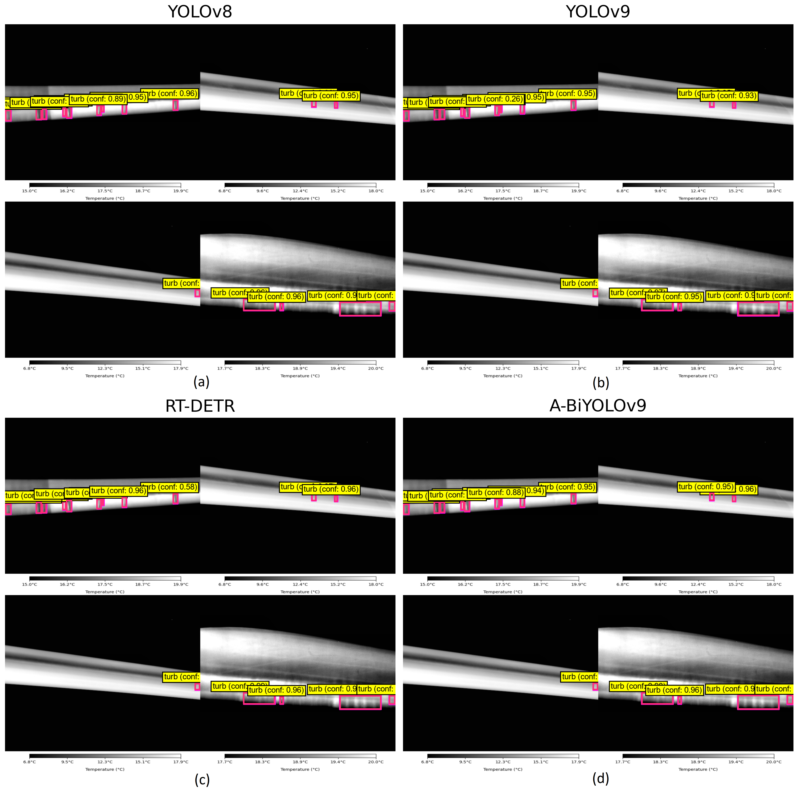
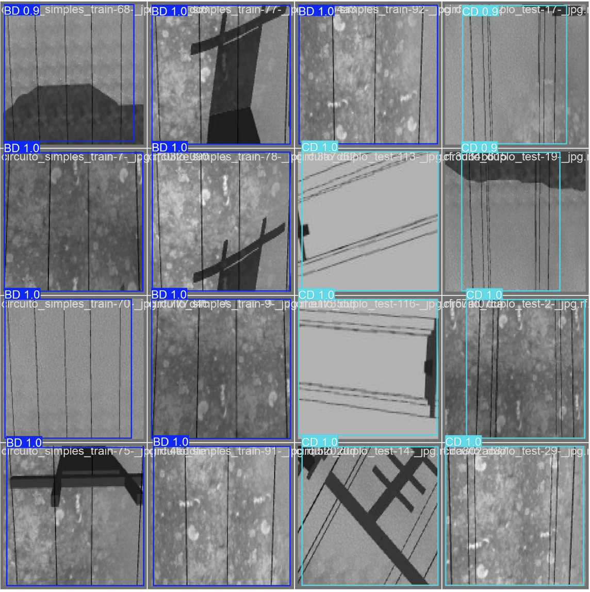

I am an Energy Systems Engineer with an M.Sc. in Energy Systems Engineering from Fırat University. My work focuses on applying artificial intelligence and deep learning to renewable energy systems.
My academic work gave me hands-on experience with computer vision, deep learning, and YOLO-based object detection in renewable energy applications. I am now focusing on building a career in data science, using Python, machine learning, and analytical thinking to turn data into practical insights and solutions.
Research & Projects

A-BiYOLOv9: An Attention-Guided YOLOv9 Model for Infrared-Based Wind Turbine Inspection
Developed A-BiYOLOv9, an enhanced YOLOv9-c model for detecting small, low-contrast Thermal Turbulence Patterns (TTPs) on wind turbine blades using infrared thermographic images. The model incorporates CBAM attention modules and BiFPN feature fusion to improve multi-scale detection. Evaluated on the KI-VISIR dataset with 5,852 labeled TTP instances, A-BiYOLOv9 achieved 0.998 precision, 0.997 recall, and 0.969 mAP@0.5:0.95.

Deep learning-based detection of power transmission lines using YOLOv4 and YOLOv8
Compared YOLOv4 and YOLOv8 for UAV-based power transmission line inspection. YOLOv8 models outperformed YOLOv4, with the best results reaching 0.995 mAP@50 and 0.919 mAP@50:95.
Get In Touch
For research collaboration, data science opportunities, or professional communication,
please feel free to contact me by email or through my online profiles.
{kind=link}
{kind=link}